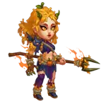

Cain Pet Guide for Hero Wars: Dominion Era
- By: Alexandre Domingos. .
Cain is a powerful pet in Hero Wars: Dominion Era, well-known for enhancing Dodge and Physical Attack. This guide explores his stats, synergy, and best use.
With strong synergy with heroes like Aurora, Yasmine, and Dante, Cain helps in battles by increasing Energy gain from successful dodges and boosting attack power.
Who Is Cain?
Cain is a support pet in Hero Wars: Dominion Era focused on increasing survivability and damage output for dodge-based heroes. He grants bonus Energy for every successful dodge and improves physical attacks.
- Class: Support Pet
- Position: Linked to Dodge-Based Heroes
- Main Stat: Armor Penetration
Maximum Stats:
Power: 181,943
Skill Power: 12,360
Armor Penetration: 47,911
Patronage Power: 11,064
Bonus Stats: Dodge, Physical Attack (depends on Patronage Power)
Bonus Skill: Master gains bonus Energy for each successful Dodge.
Cain excels when paired with heroes who rely heavily on Dodge mechanics. His energy-boosting abilities make him a top-tier pick in both PvP and PvE.
Cain Pros and Cons - Hero Wars: Web and Facebook
✅ Pros
- Excellent synergy with dodge-based heroes like Dante, Yasmine, and Aurora.
- Grants bonus Energy on each successful dodge, accelerating ultimate abilities.
- Strong in both offense and defense, especially in Arena and Guild Wars.
- Passive Dodge buff boosts the entire team's survivability.
- Great counter to physical damage teams thanks to high evasion uptime.
⌠Cons
- Ineffective against pure damage heroes like Heidi, who bypass Dodge mechanics.
- Requires heroes with high Dodge to get full value from his skills.
- Less useful in teams that rely on magic damage or tank-based frontline heroes.
- Can be countered by teams that drain or suppress Energy gain.
Cain Skills Guide - Hero Wars: Dominion Era
Learn how Cain’s dodge-based skills help boost team survival and deal damage in Hero Wars: Dominion Era.
Cain Active Skills
Nightfangs
Every time a hero on your team dodges an enemy attack, Cain gains a "charge" think of this like storing up power. He can store up to 20 charges. When this skill is activated, Cain uses all the stored charges at once to deal Physical damage to the nearest enemy. The more charges he has, the more damage he deals.


Tips: This skill works best with heroes who dodge frequently like Aurora or Yasmine. The more dodges, the stronger the attack!
Invisibility Mastery
This is a passive skill, which means you don’t have to activate it it works automatically. Cain increases the Dodge stat of all heroes on your team. Dodge helps heroes avoid taking damage. The higher Cain’s Skill Power, the more Dodge he adds to the team.
Tips: This is especially helpful in PvP battles where survival depends on avoiding strong hits. Great for teams with fragile but fast heroes.
Cain Patronage Skill
Dark Patron
When Cain is linked as a Patron to a hero, that hero will gain extra Energy every time they dodge an enemy attack. Energy is used to activate ultimate abilities, so this helps your hero use their strongest skill more often.
Tips: Use Cain as a Patron for heroes like Dante or Yasmine who dodge often they’ll unleash ultimates much faster!
Best Teams and Synergy - Hero Wars: Dominion Era
Cain has excellent synergy with dodge-based heroes and fits into top meta teams for both offense and defense. His ability to boost Energy and Dodge makes him especially strong in teams where survivability and quick ultimates are key.
Meta Team Compositions with Cain
The following two teams are among the most powerful current compositions in Hero Wars, using Cain and Dante as core members. These teams are effective in both Arena offense and Guild Wars defense.
Team 1
- Tank: Dante (frontline dodge tank)
- Support: Nebula, Sebastian
- Damage Dealers: Iris
- Healer: Dorian
- Pet: Cain
Team 2 (variation)
- Tank: Dante
- Support: Nebula, Sebastian
- Damage Dealers: Iris, Jet
- Pet: Cain
Strengths: These teams dominate against other Dante-based teams and scale very well in both offense and defense. Cain increases dodge, Energy gain, and supports quick skill cycling, making these heroes very hard to take down.
Weakness: These compositions struggle against Heidi-based teams. Heidi’s Pure Damage bypasses dodge mechanics, making Cain’s defensive support less effective and exposing the team’s main weakness.
Tip: If you face a team with Heidi, consider switching Cain out or using a different defensive setup with magic resistance instead of dodge synergy.
Cain Patronage List - Hero Wars: Dominion Era
Cain boosts Dodge and Physical Attack for specific heroes in Hero Wars. Below is the list of heroes who benefit from Cain's Patronage skill and stats.
Aurora


Dark Star


Heidi

Jet


Qing Mao

Conclusion - Cain in Hero Wars: Dominion Era
Cain is a top-tier pet choice for players who focus on dodge-based team compositions. His ability to boost Dodge across the entire team and provide bonus Energy through his Patronage skill makes him a key support in both offensive and defensive setups. Heroes like Dante, Yasmine, and Aurora benefit greatly from his passive effects, allowing for fast-paced, high-damage fights.
What truly sets Cain apart is how well he synergizes with teams that rely on speed, evasion, and burst. By turning successful dodges into powerful counterattacks and faster ultimates, Cain brings a dynamic layer of strategy to any battle. He is also effective against other meta teams that depend on physical damage, making him a solid counter pick in competitive play.
However, Cain isn’t universally effective. He performs poorly against heroes like Heidi, whose pure damage ignores Dodge, and in magic-heavy lineups where Dodge has limited impact. Still, when used correctly and paired with the right heroes, Cain can carry your team to victory and become one of the most valuable pets in Hero Wars: Dominion Era.
Explore new skills with our featured heroes!
 Albus Pet Guide for Hero Wars: Dominion Era
Albus Pet Guide for Hero Wars: Dominion Era  Axel Pet Guide for Hero Wars: Dominion Era
Axel Pet Guide for Hero Wars: Dominion Era  Oliver Pet Guide for Hero Wars: Dominion Era
Oliver Pet Guide for Hero Wars: Dominion EraLeave Your Opinion!
Did you like our Guide about Cain for Hero Wars Web and Facebook? Is there something you didn't understand or would like to suggest changes to? We invite you to join our comment section on the Alexandre Games Blog page. Feel free to express your opinion, clarify your doubts, and share your suggestions.
Click the button below to get started: